Companions
Companions are NPCs that have joined the party on their adventures. They are not full members of the party, but they are important allies:
Amiri
Barbarian
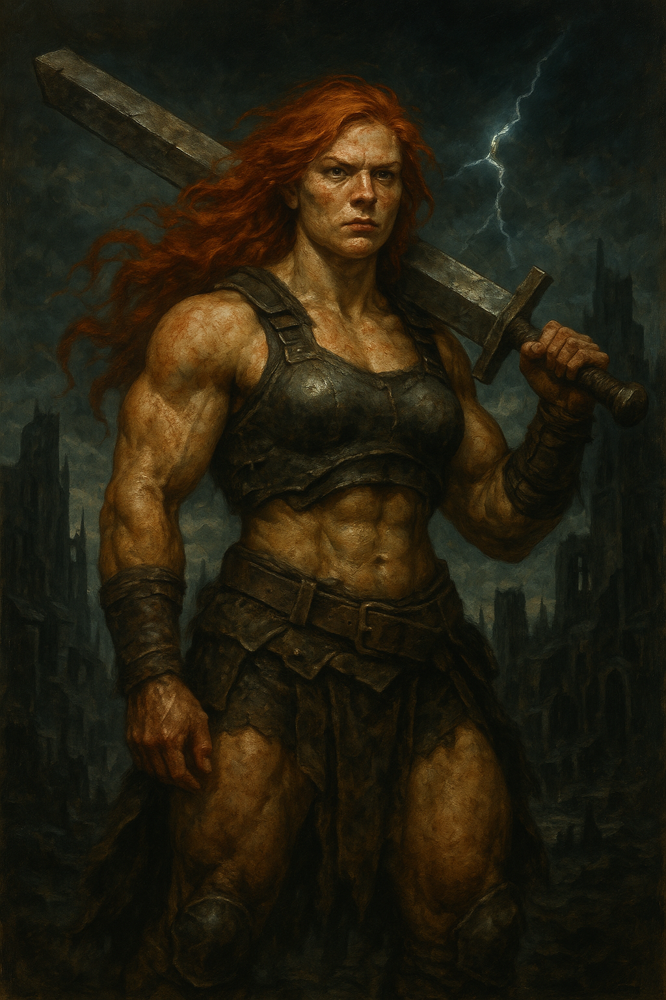A fierce barbarian from the Realm of the Mammoth Lords, Amiri wields an enormous sword taken from a frost giant she slew. She's blunt, aggressive, and values strength above all else.
Ekundayo
Ranger
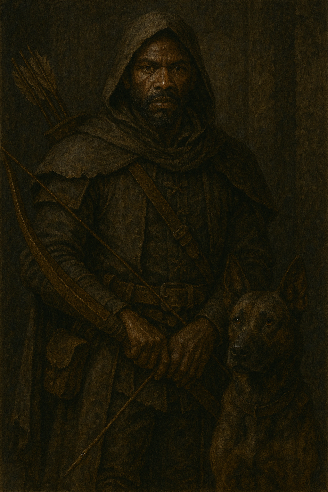A stoic and grieving ranger who seeks vengeance on trolls that destroyed his family. Ekundayo is a quiet, precise marksman with a loyal dog companion.
Harrim
Cleric
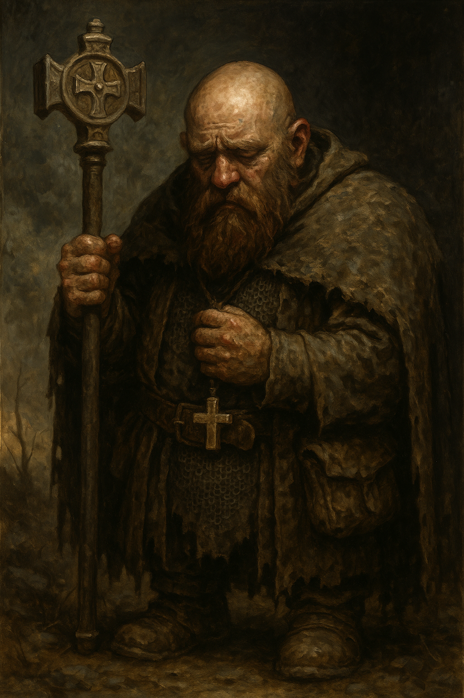A morose dwarven cleric of Groetus, god of the end times. Harrim constantly muses on the futility of life and inevitability of death, but still uses his divine power to aid his allies.
Jaethal
Inquisitor
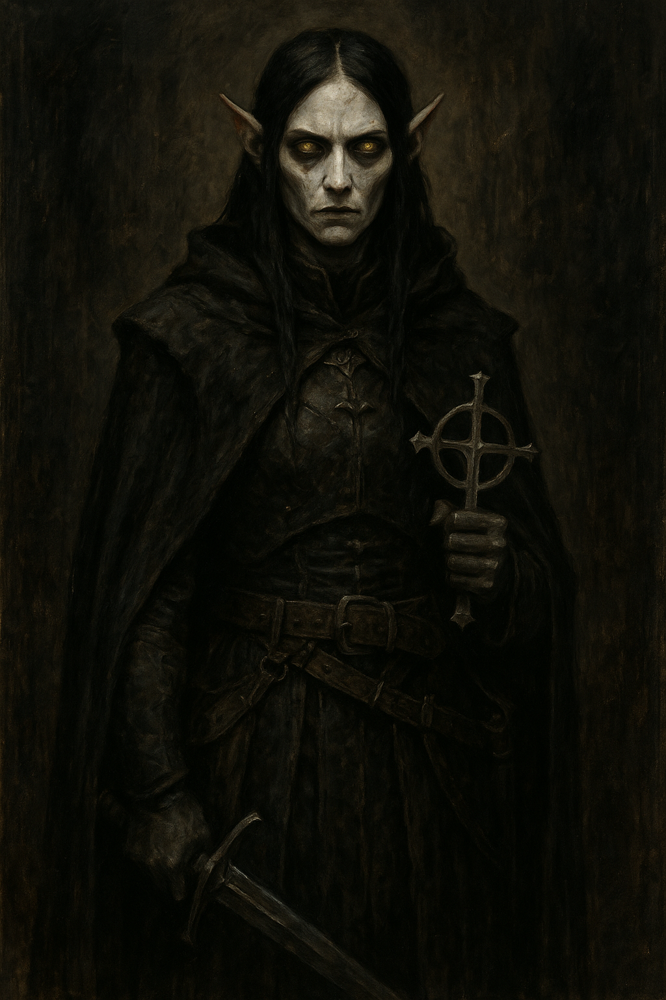A stoic and unsettling elven inquisitor of Urgathoa, Jaethal is an undead revenant driven by a dark past and a thirst for truth. She has little regard for mortal morality, viewing life and death through a detached, often chilling lens, yet her journey confronts her with unexpected revelations about faith, family, and justice.
Jubilost
Alchemist
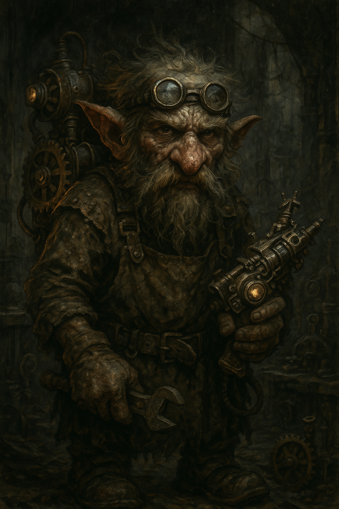A self-important but brilliant gnome alchemist and explorer. Though often sarcastic and condescending, his insights and inventions are undeniably valuable.
Kanerah/Kalikke
Kineticist
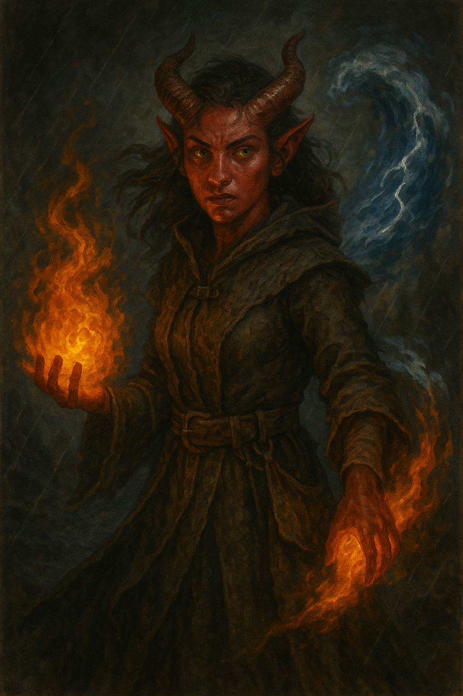Two identical tiefling twins whose souls share one body: Kanerah is pragmatic and fiery, while Kalikke is gentle and idealistic. As kineticists, they bring powerful elemental abilities and a unique dynamic to the party.
Linzi
Bard
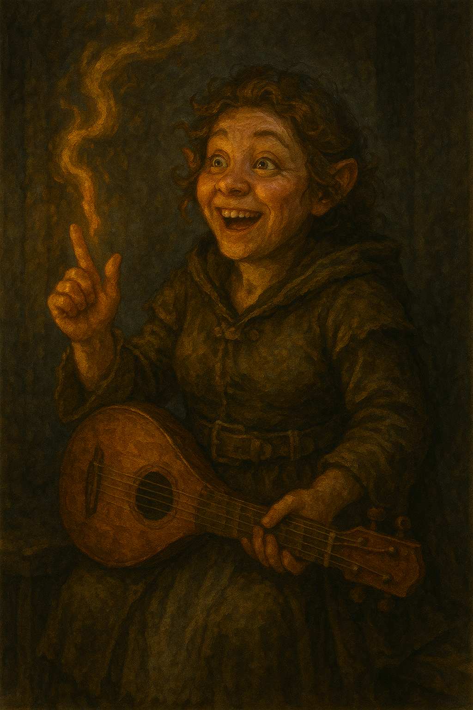A cheerful and optimistic halfling bard who wants to chronicle your rise as ruler. Despite lacking in combat prowess, she's clever, supportive, and passionate about storytelling.
Nok-Nok
Rogue
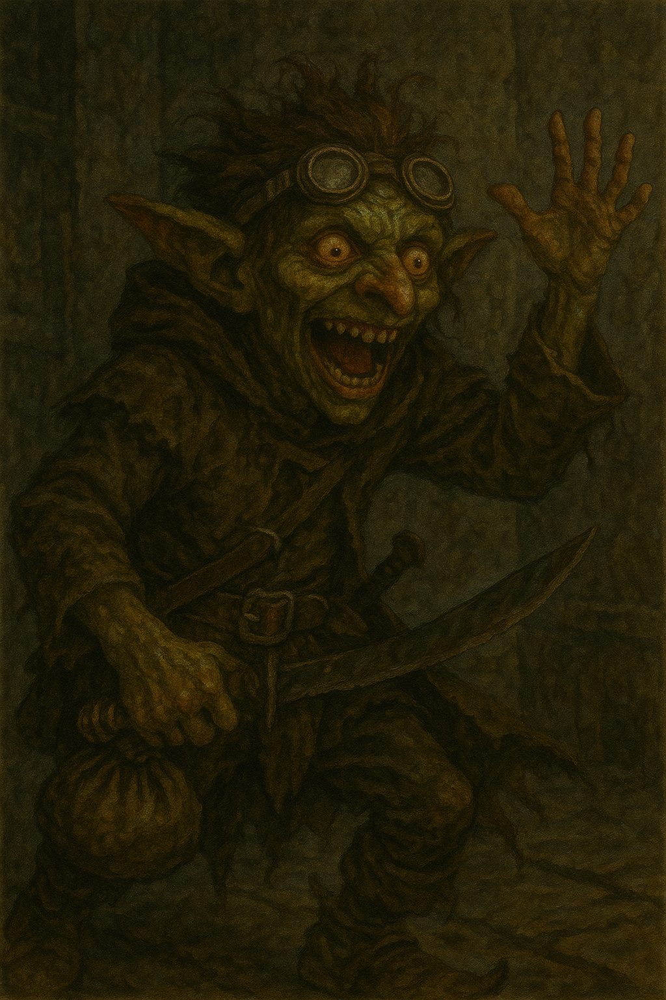A manic goblin rogue who believes he is destined to become a god. His chaotic and bizarre behavior masks surprisingly sharp instincts and a twisted form of loyalty.
Octavia
Wizard
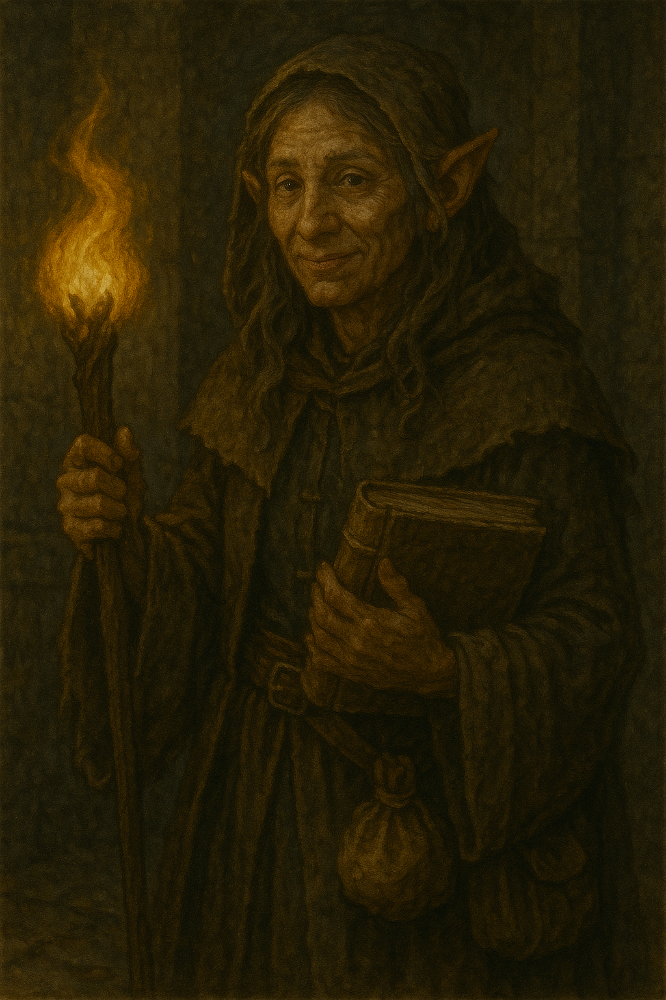A brilliant and kind-hearted half-elf wizard/rogue with a tragic past as a slave. She values freedom deeply and shares a close bond with her fellow escapee, Regongar.
Regongar
Magus
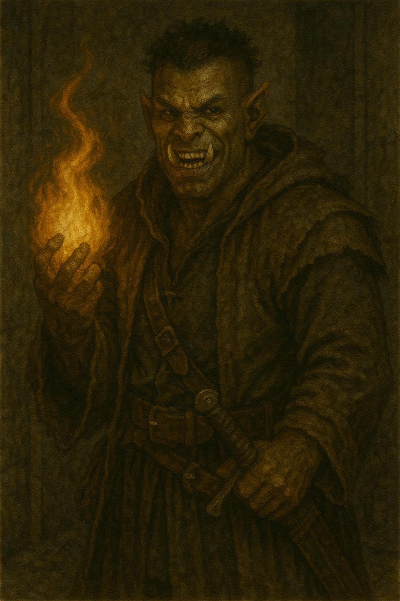A hot-headed half-orc magus who escaped slavery with Octavia. He revels in violence and danger, but his brashness hides a more complex and conflicted nature.
Tristian
Cleric
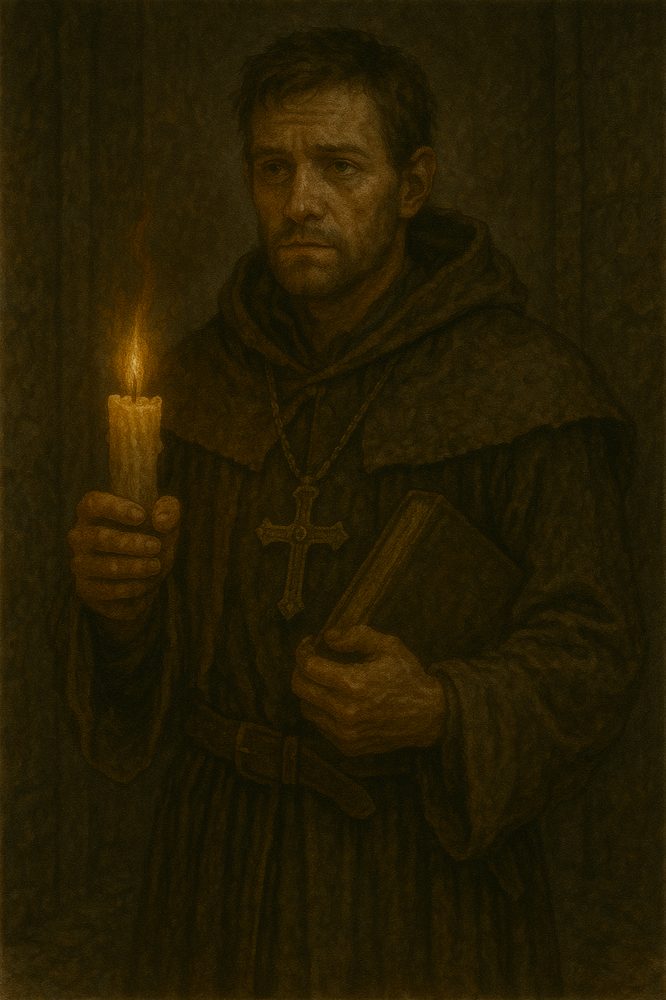A kind and devoted human cleric of Sarenrae with a mysterious background. Tristian is deeply compassionate, though his naiveté and secrets can complicate his role.
Valerie
Fighter
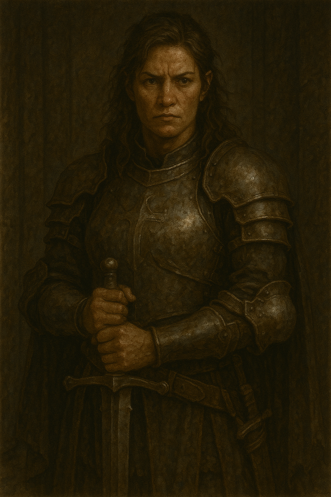A former paladin of Shelyn turned loyal fighter, Valerie is a proud and disciplined warrior who rejects the constraints of faith. She's driven by honor and duty, but often struggles with emotional vulnerability.